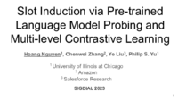

Slot Induction via Pre-Trained Language Model Probing and Multi-Level Contrastive Learning
Hoang Nguyen, Chenwei Zhang, Ye Liu, Philip Yu
In Sessions:
Sigdial Oral Session 4: Language understanding and multimodality: (Thursday, 16:10 CEST, Sun I , Watch on Zoom , Chat on Discord )
Poster

Abstract:
Recent advanced methods in Natural Language Understanding for Task-oriented Dialogue (TOD) Systems (e.g., intent detection and slot filling) require a large amount of annotated data to achieve competitive performance. In reality, token-level annotations (slot labels) are time-consuming and difficult to acquire. In this work, we study the Slot Induction (SI) task whose objective is to induce slot boundaries without explicit knowledge of token-level slot annotations. We propose leveraging Unsupervised Pre-trained Language Model (PLM) Probing and Contrastive Learning mechanism to exploit (1) unsupervised semantic knowledge extracted from PLM, and (2) additional sentence-level intent label signals available from TOD. Our approach is shown to be effective in SI task and capable of bridging the gaps with token-level supervised models on two NLU benchmark datasets. When generalized to emerging intents, our SI objectives also provide enhanced slot label representations, leading to improved performance on the Slot Filling tasks.